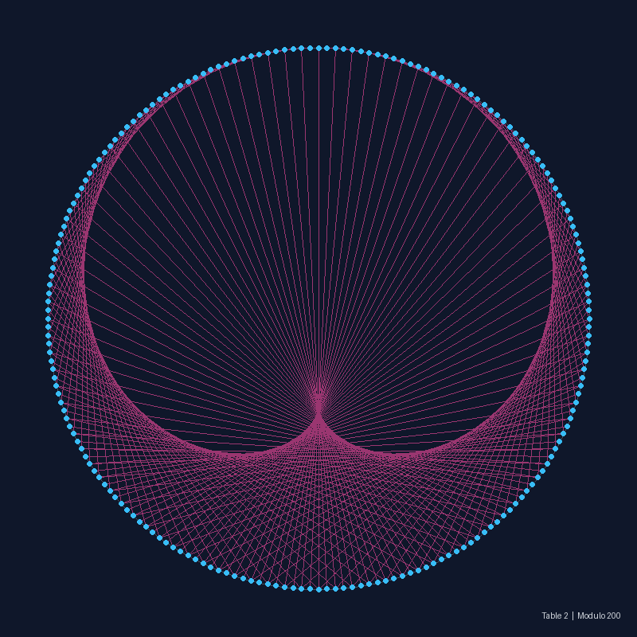
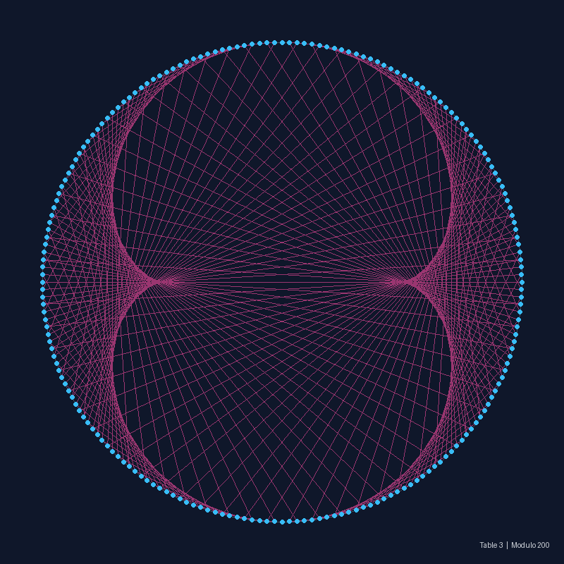
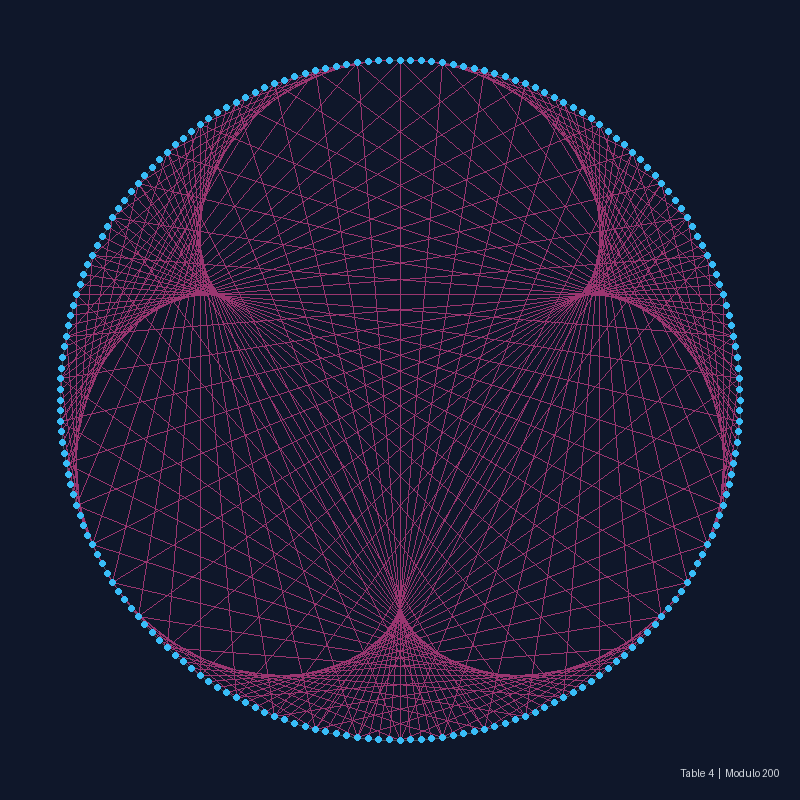
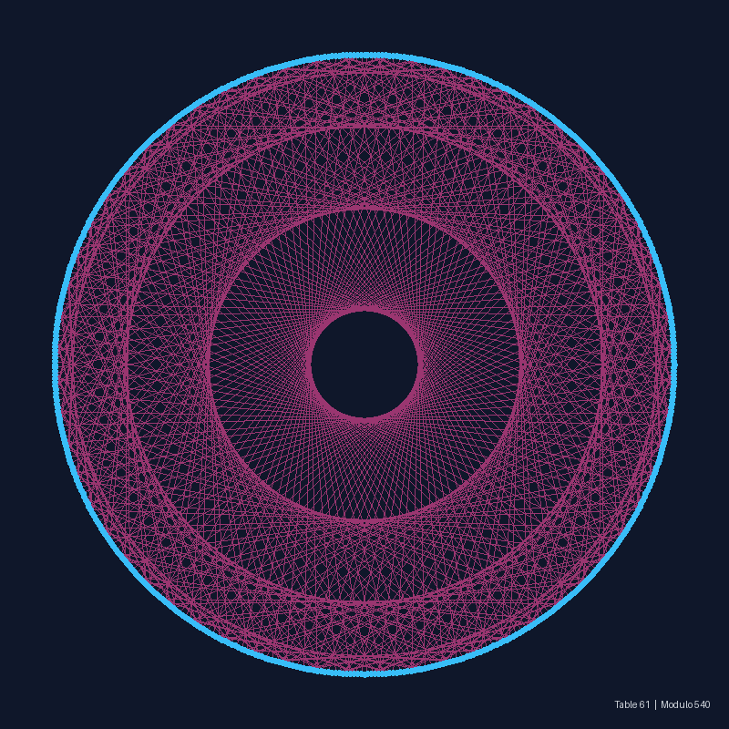

Discover how simple arithmetic multiplication on a modulo circle reveals mesmerizing cardioids, nephroids, and fractal envelopes.
Modular arithmetic, often called "clock arithmetic", operates on a finite set of numbers from 0 to m - 1. Imagine a circular clock divided into m equal points.
To construct a geometric multiplication table, we connect every point i on the circle to its multiplied destination using a straight line (chord):
Where n is the multiplication table factor (e.g. 2, 3, 61), i is the point index (0, 1, 2, ... m-1), and m is the modulo (e.g. 100, 540).
Although every single connection is a straight line segment, the dense accumulation of hundreds of straight lines forms a smooth curved shape called an envelope curve.
Different integer multiplication tables generate well-known geometric curves from classical differential geometry:

Table 2 creates a 1-cusp heart-shaped curve called a Cardioid. It is the same curve formed by light reflecting inside a coffee cup or a parabolic mirror.

Table 3 produces a 2-cusp kidney-shaped curve called a Nephroid. The number of cusps (pointed tips) for Table N is always N - 1.

Table 4 forms a 3-cusp epicycloid (trefoil shape). As N increases, the number of internal petals increases linearly.

When table N is a continuous decimal (e.g. 61.00 or moving continuously), the figure smoothly morphs through complex optical web patterns!